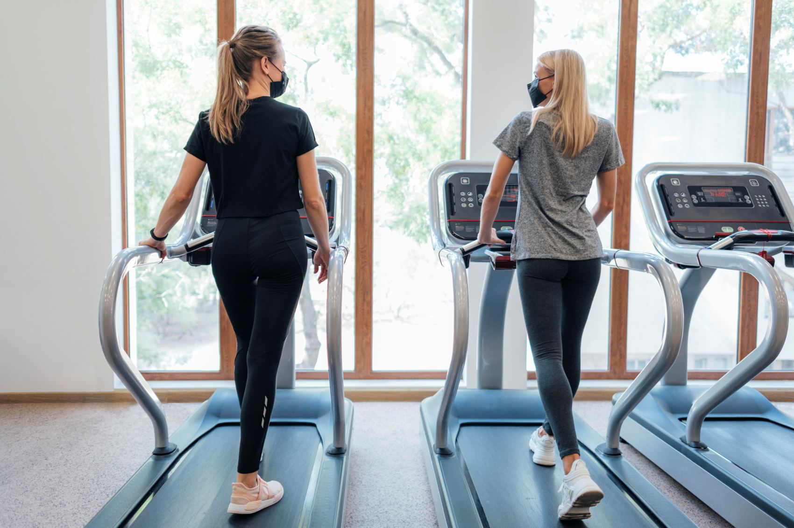
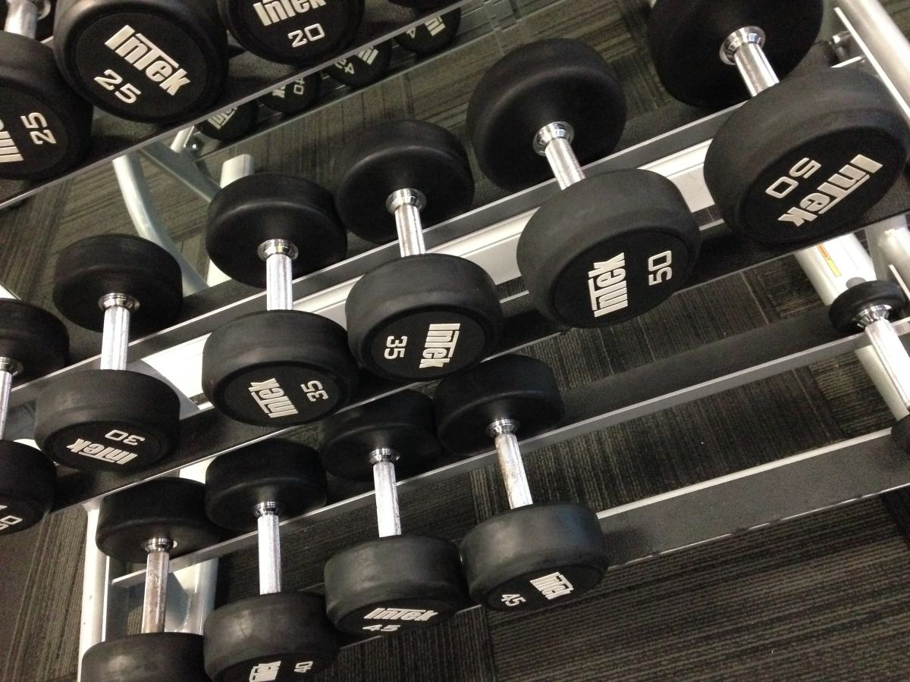
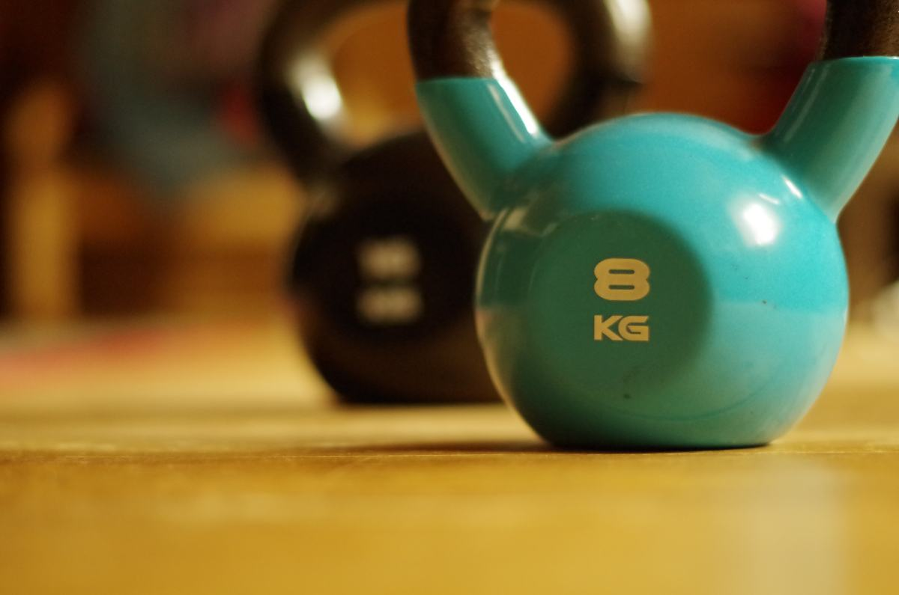
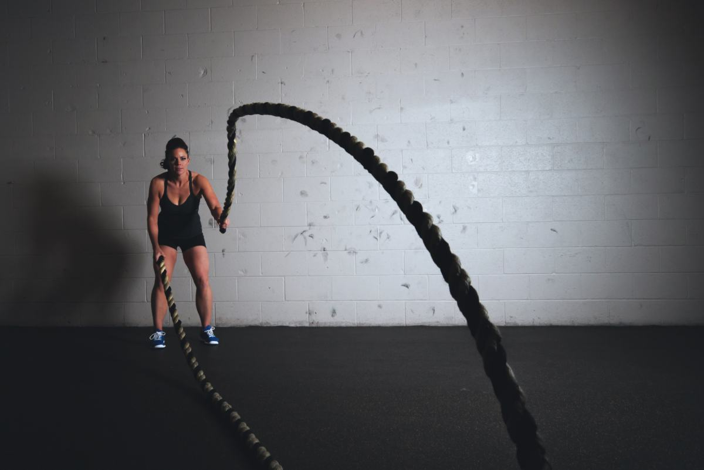

Que las máquinas estén completas
Pines, cables, asientos, seguros. Una máquina a la que le falta el pin no se usa, y si lleva meses así dice cómo se mantiene el resto.
Victoria · Región de La Araucanía
Un gimnasio no se elige por las máquinas. Se elige por el horario que uno puede cumplir y por lo que dice el plan cuando algo cambia. Esta página contesta eso por escrito, que es lo que casi ningún gimnasio hace.
01 — La pieza de esta página
Ninguna es sobre entrenar: son todas sobre el trato. Se hacen en dos minutos en el mesón y evitan casi todos los reclamos que existen en este rubro. Un gimnasio que las contesta sin rodeos ya dijo bastante de cómo trabaja.
Desde el día que se paga o desde el día que se empieza a ir. Parece lo mismo y no lo es: entre pagar un viernes y partir el lunes siguiente ya se fue una semana.
Y si la hay, si se paga una vez o cada vez que se renueva. Es lo que más sorprende a la gente en la segunda mensualidad.
La pregunta que más problemas evita. Un viaje, una temporada de trabajo, una enfermedad. Si se puede congelar, por cuánto tiempo y avisando cuándo: eso se pregunta antes y no cuando ya pasó.
Es distinto de congelar y casi nunca está escrito. No hay una respuesta correcta —cada gimnasio decide—, pero saberla de antemano es lo que hace que uno firme tranquilo.
Evaluación inicial, una rutina, seguimiento. Hay planes que son sólo la puerta abierta y está bien, siempre que se diga. Lo que no sirve es suponerlo.
No es lo mismo tener profesor todo el día que en dos bloques. Para quien empieza, esto importa más que las máquinas: es la diferencia entre que le corrijan la postura o no.
Incluyendo sábados, domingos, feriados y enero. Un gimnasio que cierra justo a la hora en que usted puede ir no le sirve, por bueno que sea.
Estas siete son conocimiento general del rubro, escrito por mí, y sirven para cualquier gimnasio del país. No describen los planes de Life Motion: las respuestas las pone el negocio, y ésa es justamente la gracia — un gimnasio que publica sus respuestas se diferencia de todos los demás sin gastar un peso. En toda la página no hay ni un precio ni una duración de plan.
El mejor plan es el que se puede cumplir
a la hora en que uno puede ir.
02 — Sin saber nada de entrenamiento
Quien nunca fue a un gimnasio no puede juzgar el equipamiento, y no hace falta. Estas seis cosas se ven en la primera visita y dicen bastante más que el catálogo de máquinas.
Pines, cables, asientos, seguros. Una máquina a la que le falta el pin no se usa, y si lleva meses así dice cómo se mantiene el resto.
Sobre todo alrededor de las barras y los bancos. Una sala apretada no es más equipada: es más incómoda y más riesgosa.
En su rack, por peso. Es la señal más barata y más honesta de cómo se cuida el lugar, y además evita la mitad de los golpes en los pies.
Suena secundario y es lo primero que hace abandonar a la gente en invierno. Camarines fríos y sin agua caliente pesan más que cualquier máquina.
Alguien de la casa en la sala, no detrás de un mesón. Se nota en cinco minutos, y es lo que hace que el que recién llega no se vaya.
Vaya a mirar a la hora en que iría de verdad. Un gimnasio vacío a las tres de la tarde puede ser imposible a las siete, y eso no aparece en ninguna foto.
Ninguna de estas seis tiene que ver con entrenar. Esta página no da consejos de entrenamiento, ni rutinas, ni nada de alimentación, y no es un descuido: eso lo indica un profesional mirando a la persona, no una página web.
22 reseñas en Google
Las veintidós con cinco estrellas.

03 — En una ciudad como Victoria
En una ciudad chica el gimnasio no se elige por publicidad: se elige porque alguien lo recomendó. Y eso Life Motion ya lo tiene — veintidós reseñas con cinco estrellas es exactamente eso, escrito.
Lo que una página agrega no es reputación: es que la persona que se decidió a las once de la noche pueda ver el horario, los planes y cómo inscribirse sin esperar a mañana. En este rubro la decisión se toma en un impulso y se pierde en un día.
Lista de ejemplo de lo que suele tener un gimnasio. Qué ofrece Life Motion de verdad, con qué horarios y qué planes, lo completa el negocio: está armada y vacía a propósito.
04 — La sala



05 — Contacto
Y una recomendación que no cuesta nada dar: vaya a mirar a la hora en que iría de verdad. Es el único dato que ninguna página puede reemplazar.
Las seis líneas en cursiva son las que hay que llenar antes de publicar. Y son exactamente las siete preguntas de la primera sección: si están contestadas ahí, la página deja de ser un folleto y pasa a ser útil.
Para el dueño de Life Motion
Todos los gimnasios muestran las máquinas. Casi ninguno publica sus condiciones: desde cuándo cuenta el plan, si hay matrícula, si se puede congelar, qué pasa si alguien se lesiona.
Publicar eso no le quita nada y lo pone en otra categoría: el que lo lee llega decidido y sin reclamos después. Y en una ciudad como Victoria, donde todo se sabe, evitar reclamos vale más que cualquier promoción.